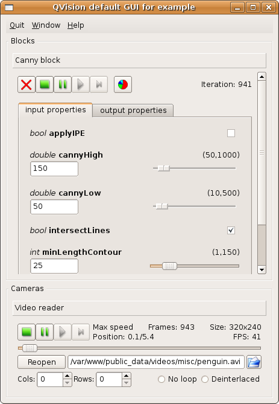
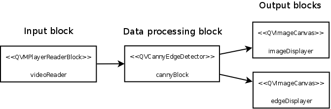

PARP Research Group
PARP Research Group
| PARP Research Group |
Universidad de Murcia |
Creating the first block-oriented applicationIn the actual section we will see the creation of a real block-oriented application step by step. This example application will perform Canny edge detector on the image frames from a video sequence, and show in an image canvas the sequence of detected edges. This will be the application Qt project file, which is is a typical project file for a QVision application: include(/usr/local/QVision/qvproject.pri) TARGET = blockExample SOURCES = blockExample.cpp The project contains a single source file called blockExample.cpp, containing the source code for the example: #include <QVApplication> #include <QVMPlayerReaderBlock> #include <QVImageCanvas> #include <QVCannyEdgeDetector> #include <QVDefaultGUI> int main(int argc, char *argv[]) { QVApplication app(argc, argv, "Example program for QVision library. Obtains Canny borders from input video frames." ); QVMPlayerReaderBlock videoReader("Video reader"); QVCannyEdgeDetector cannyBlock("Canny block"); QVImageCanvas imageDisplayer("Original image"); QVImageCanvas edgesDisplayer("Canny edges"); videoReader.linkProperty(&cannyBlock,"Input image"); cannyBlock.linkProperty("Input image",imageDisplayer); cannyBlock.linkProperty("Output image",edgesDisplayer); QVDefaultGUI defaultGUI; return app.exec(); } In the QVision, blocks are modelled as objects. Objects derived from the class QVProcessingBlock are processing blocks, which can be linked between them, so they can receive their corresponding input data from the previous node in the data-path, and send the output data to the following node in the data-path. Our example application creates four block objects: videoReader, cannyBlock, imageDisplayer, and edgesDisplayer. The videoReader object reads image frames from a video source (which can be a video file, a webcam attached to the computer, etc...). The second block object (cannyBlock) applies the Canny edge detector on each input frame read by the videoReader object, obtaining the edge response images. The two last block objects (the imageDisplayer and edgesDisplayer) receive the original image read by the videoReader and the edge response image produced by the cannyBlock and show them on two different image display windows. The method QVProcessingBlock::linkProperty() establishes data sharing links between the block objects. Next section will explain its usage in detail. Besides these block objects, our example application contains a QVApplication object named app. This is the main object in a QVision application. Amongst other tasks it stores references to all blocks and graphical elements of the application, parses the command line parameters. Also, the call to its QVApplication::exec() method opens the video sources, launches the graphical elements, and starts the data processing at the blocks defined in the application. The call returns only when the work at the processing blocks ends, and the application finishes.
The QVDefaultGUI object is optional in our application. By creating it, we add a control window that will allow the user to inspect the performance of our application, and gain control on different aspects of its execution. For example, the user can change the values of the parameters of the application algorithms at execution time, and control the processing flow of the different blocks and the video sources opened by the application. The user can stop, resume, or advance the input of the video streams opened by the application, and stop, resume or advance one iteration for any block -i.e., processing block- instantiated by the application. Once compiled using the qmake-qt4 and make tools, we can execute the application using the following line: ./blockExample --URL=penguin.avi The file penguin.avi is one of our test videos. For further info about command line parameters see section Command line parameters. The application will open the image canvases, and display each image read from the video source, and the edges detected at it: 
Also, the application will open the control window:

A full description on the features of this control widget can be found here: QVDefaultGUI. Block data linkingIn the previous example application the videoReader block object must share the input frames which it reads from the video source with the cannyBlock. In the same manner, the cannyBlock block must share each original image, and the edge response image it produces with the imageDisplayer and the edgesDisplayer block objects. The following line connects the videoReader object with the cannyBlock object, so the former sends each frame read from the video source to the latter. videoReader.linkProperty(&cannyBlock,"Input image");
The literal string Input image denotes univocally a dynamic property inside the block cannyBlock. Dynamic properties are special object member variables contained in the block objects, that can be seen as slots where the programmer can plug in wires to establish the data connections between the block objects. The previous code line establishes that each time a new input frame is read from the video source by the videoReader block, it will automatically be send and stored in the Input image dynamic property at the cannyBlock object. The imageDisplayer must receive the original input image from the cannyBlock. Also, the edgeDisplayer must receive the edge response images to display them. The following lines will establish the needed data connections between the cannyBlock and both the imageDisplayer and the edgeDisplayer block objects, so every time the former obtains the Canny edges from an input image, it will send both the edge image and the original image to the edgeDisplayer and the imageDisplayer respectively: cannyBlock.linkProperty("Input image", imageDisplayer); cannyBlock.linkProperty("Output image",edgesDisplayer); Block objects and data-links define a data-path, which transfer data from the input node (the camera) to the output node (the image display window). Our example application transfer images and edge lists from the videoReader and cannyBlock block objects to the imageDisplayer and edgeDisplayer block objects. The following image illustrates the final data-path of our example application:

In the following section, An advanced block-oriented example, this edge detector example will be extended to illustrate how to create and interconnect several processing blocks in the same block-oriented application. |